<footer class="site-footer">
    <div class="container">
        <a class="brand" href="index.html" title="Lago Blanco - inicio">
            
            <span class="brand-text">
                <strong>Lago Blanco</strong>
            </span>
        </a>

        <button class="menu-toggle" type="button" aria-label="Abrir menú" aria-controls="main-navigation" aria-expanded="false">
            <span></span>
            <span></span>
            <span></span>
        </button>

        <nav class="main-navigation" id="main-navigation" aria-label="Navegación principal">
            <a href="index.html" >Inicio</a>
            <a href="localidad.html">La localidad</a>
            <a href="actividades.html">Qué hacer</a>
            <a href="turismo.html">Turismo</a>
            <a href="informacion.html">Información útil</a>
            <button class="search-button" type="button" aria-label="Buscar"></button>
        </nav>
    </div>
</footer>